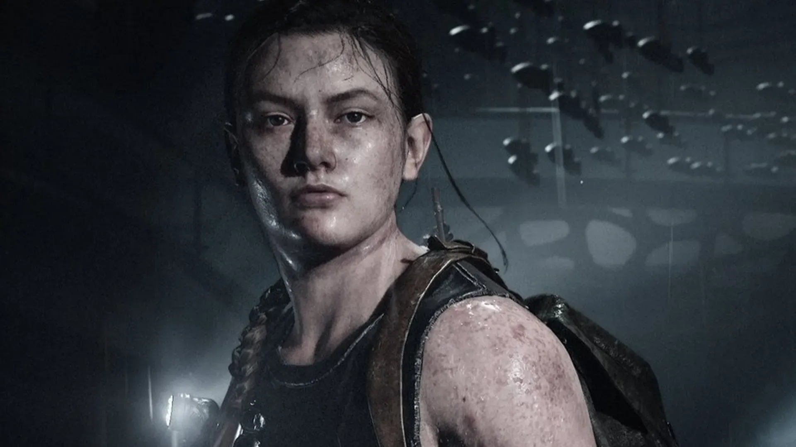

Abby

Ellie


The Last of Us Part II levou quase sete anos para ser desenvolvido.
A equipe da Naughty Dog realizou uma pesquisa profunda sobre
comportamento humano, cenários pós-apocalípticos e captura de
movimentos para criar uma experiência cinematográfica e imersiva,
cuidando de cada detalhe desde a vegetação até as expressões faciais mais sutis.
Foram gravadas mais de 200 sessões diferentes de captura de movimento,
incluindo não apenas as animações corporais, mas também expressões faciais
ultra-realistas. A tecnologia usada permitiu que os personagens transmitissem
emoções complexas, aproximando o jogo do nível de um filme de alto orçamento.
Os efeitos sonoros dos infectados foram criados combinando vozes humanas distorcidas
com sons de animais, objetos quebrando e instrumentos musicais alterados digitalmente.
Esse trabalho de áudio foi tão detalhado que até passos na neve, respiração e variação
de vento mudam dependendo da situação.
O jogo conquistou mais de 300 prêmios de “Jogo do Ano”, um recorde absoluto na indústria.
Entre eles, está o The Game Awards 2020, onde venceu em sete categorias, incluindo “Melhor Direção”,
“Melhor Narrativa” e “Melhor Design de Áudio”.